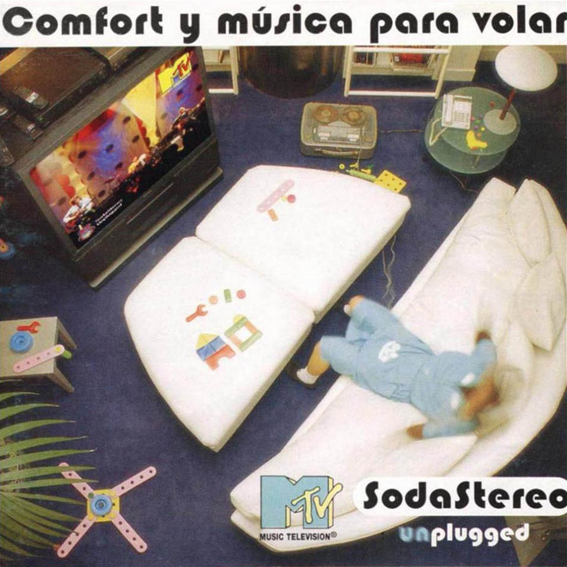

Gustavo Cerati · Neural DSP Quad Cortex · stock blocks
Interactive song-by-song setups for Comfort y Música Para Volar — the 1996 MTV “(Un)Plugged” session plus studio outtakes. Open the album, pick a track, and build the preset from the chain diagram and knob values.

1996 · Vox AC50 stand-in · chorus + delay lounge · 13 MTV live + 4 studio tracks